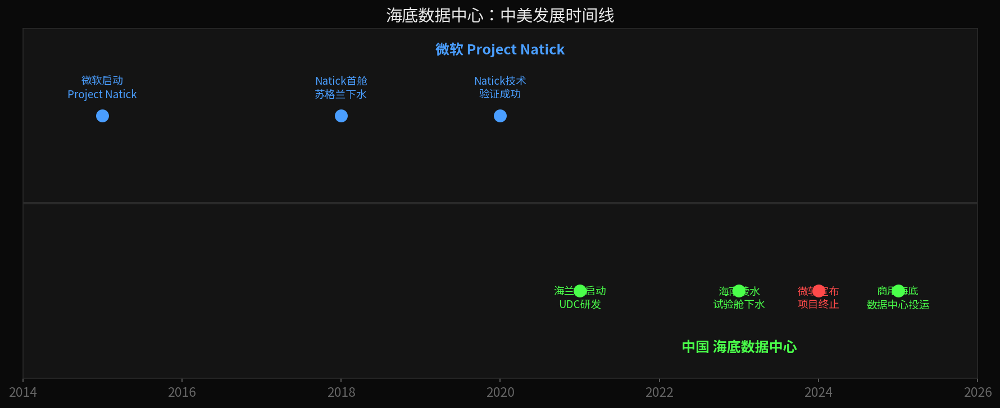
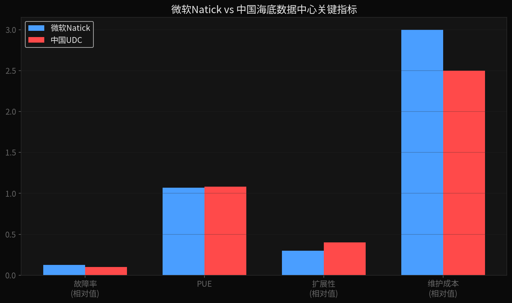
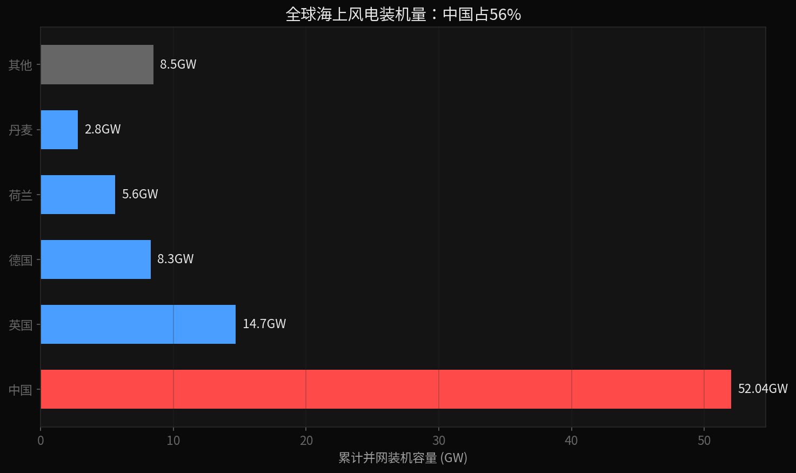
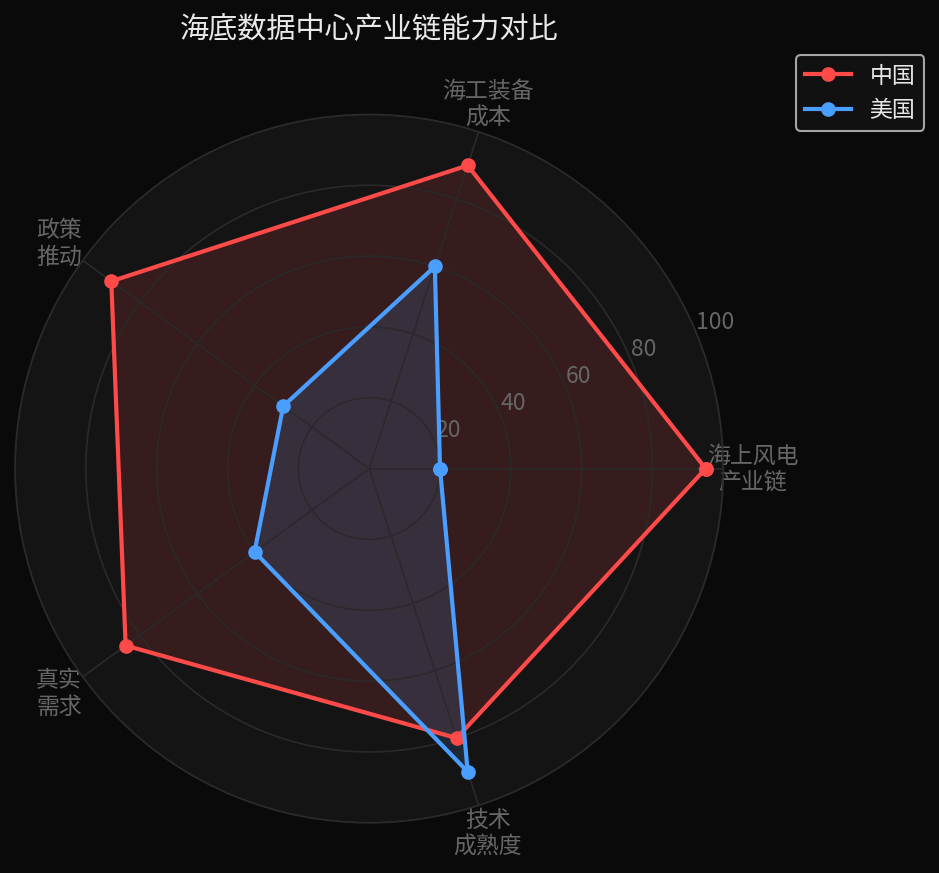
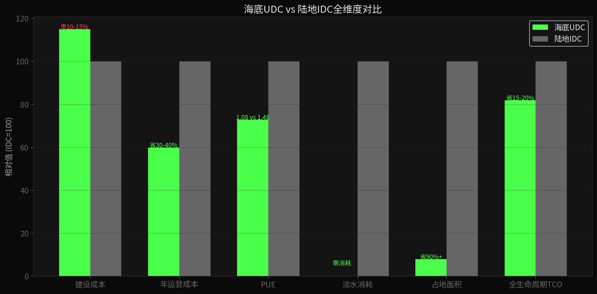

小K·AI行业数据分析 | 2026-06-28
微软不是技术上做不成海底数据中心，是商业上算不过账。中国能跑通，靠的不是单点技术领先，是海上风电+海工装备+政策+需求四件套的系统整合能力——这是产业链的胜利。
微软2018年就把一个数据舱沉到了苏格兰海底，叫Project Natick。864台服务器，泡了两年。
技术上，大获全胜：
| 指标 | 水下Natick | 陆地对照组 |
|---|---|---|
| 故障率 | 1/8（仅6台故障） | 8台故障 |
| PUE | 1.07 | 1.48（行业平均） |
| 省电 | 30% | 基准 |
2024年6月，微软正式宣布项目终止。负责人只说了一句"我们不会在世界任何地方建海底数据中心"，至于为什么——没说。

陆地上服务器坏了，工程师带个扳手五分钟换个硬盘。海底呢？派潜水员或机器人下去。AI时代芯片一年一换代，海底罐子放下去好几年才能捞上来一次，硬件迭代完全跟不上。
海底数据舱是固定容量的罐子，放下去多少服务器就是多少。陆地数据中心今天加100台，明天扩1000台。微软是云服务商，卖的就是弹性——固定容量的罐子根本没法满足。
微软的钱和人全扑在AI超算和模块化核反应堆上了。海底数据中心这个方向，优先级排不上号。
所以微软不是"技术上做不成"，是商业上算不过账——维护贵、扩展难、优先级低，三件事一加，不干了。

AI正在把电力变成新的稀缺资源。
全国数据中心一年用电量超过3000亿度，相当于2.5个三峡电站的发电量。而且每年还在以20%以上的速度增长。上海、深圳这些沿海一线城市——没地、没电、没能耗指标。新建一个大型数据中心的审批难度，不亚于一个重工业项目。
当算力瓶颈从"能不能造出芯片"，转向"有没有足够的电和地"——海底数据中心的故事，就完全不一样了。
中国海上风电累计并网5204万千瓦，占全球56%。第二名到第十名加起来都没中国多。美国2025年几乎零新增，拍卖取消、项目推迟。海底数据中心最理想的模式是海风直供——连输电成本都省了。美国连海风配套都没有。

中国造船产量全球第一，海洋工程装备产业链齐全。造一个海底数据舱的成本，可能只有美国的几分之一。技术再牛，造一个亏一个，也没法商业化。
从"东数西算"到"东数海算"，算电协同是国家战略方向。海南、上海、广东都在推海底数据中心试点，政策绿灯全开。
中国沿海省份人口密集、经济发达，但土地和电力都紧张。海底数据中心不占陆地、不耗淡水、用海水散热——正好打在痛点上。
这四件事缺一件都成不了。微软有技术，但缺海风产业链、缺海工成本优势、缺政策推力、也缺资源约束下的真实需求。这不是单点技术的胜利，是产业链的系统性碾压。

国内已投运的商用海底数据中心项目，都是一家叫海兰信的公司在做。全球唯二、国内唯一有全套商用技术。2022年6月29日被美国列入实体清单。
赛道是好赛道，公司是核心玩家。但几个风险：
以上仅为产业分析，不构成投资建议。投资有风险，决策请谨慎。
最反常识的发现——海底数据中心，全算下来，比陆地还便宜。
| 维度 | 海底UDC | 陆地IDC |
|---|---|---|
| 建设成本 | 贵10-15% | 基准 |
| PUE（能效） | 1.08 | 1.48 |
| 年运营成本 | 低30-40% | 基准 |
| 淡水消耗 | 零 | 2.3MW年耗4万吨 |
| 占地面积 | 省90%+ | 基准 |
| 全生命周期总成本 | 低15-20% | 基准 |
建设确实更贵，但运营省——省电费、省水费、省土地、省人工，设备寿命还更长。20年算下来反而便宜15%-20%。贵的是建设，省的是一辈子。

海底数据中心不是科幻概念，是已经跑通的商业方案。美国没做成不是技术不行，是维护、扩展、战略优先级三件事一加，算不过账。中国做成了也不是因为某一项技术突破，是风电、海工、政策、需求四件套同时到位了。
数据来源：
微软Project Natick：微软官网技术白皮书、Nature合作论文（2020） | 微软叫停：微软2024年6月官方声明、Noelle Walsh公开表态 | 故障率/855台对比：微软Natick项目最终报告（注：陆地对照组135台，样本量不对称，1/8为近似比值） | PUE数据：海兰信陵水项目公开数据 + 微软Natick报告 | 海上风电装机：中国风能专委会《海上风电回顾与展望》2026（并网口径5204万千瓦） | 美国海上风电停滞：GWEC全球海上风电报告2026 | 数据中心用电量：中国信通院《数据中心白皮书》2025 | 海兰信项目信息：公司公告、三亚崖州湾中标公示、陵水项目公开报道 | 实体清单时间：美国商务部BIS 2022年6月29日公告 | TCO/成本对比：海兰信公开路演材料 + 行业研报综合
本内容基于公开数据整理，不构成任何投资建议。AI与算力产业迭代快，数据截至2026年6月。
本内容由 Coze AI 生成，请遵循相关法律法规及《人工智能生成合成内容标识办法》使用与传播。